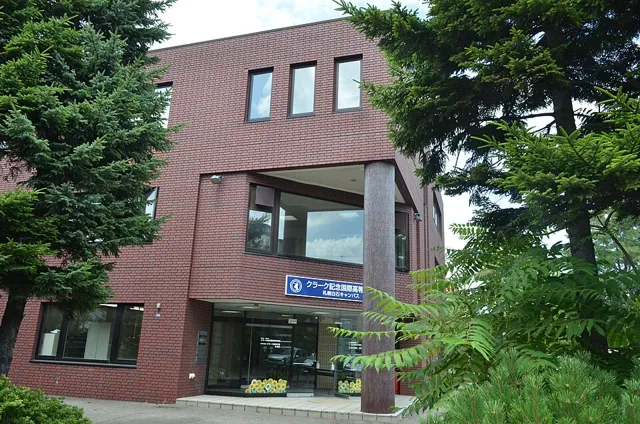
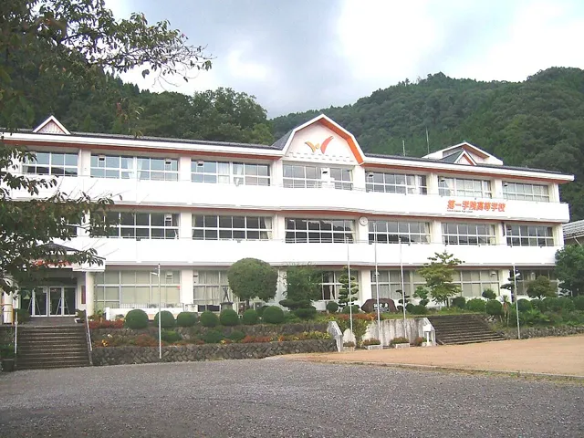

PR本ページはN高グループの資料請求の広告を含みます。順位と内容は、2026年9月27日時点で確認した各校の公式情報・公的資料をもとに当サイトが整理したものです。
中3向け｜3校比較ランキング｜2026年9月版
N高・クラーク・第一学院、
どこがいい？
5つの物差しで比べて、順位をつけました。
 家で学ぶ日
家で学ぶ日
家で学ぶか、通って学ぶか。2027年4月の高校入学を考えている人向けに、3校の学び方を同じ5項目で比べました。まずは比較表からどうぞ。
3校を、同じ5項目で比べると
表は横にスクロールできます
| 比較ポイント | N高グループ | クラーク記念国際 | 第一学院 |
|---|---|---|---|
| 普段の学び方 | ネット中心〜通学 | 通学〜オンライン併用〜自宅学習中心 | オンライン〜通学 |
| 通うペース | ネット／週1＋／週3／週5 | 週5日（全日型）、週1〜5日（スマートスタディ・キャンパスによる）、月1・2回程度（単位修得） | 最大週5日・最大週2日（通学スタイル）、オンラインスタイル |
| 入学後の通い方の変更 | 変更できる。時期を公式FAQで公開（3カ月／6カ月ごと） | コース変更は可能。時期はキャンパス・コースで異なる | 通学スタイルの登校日・登校日数はいつでも変更可能 |
| 相談・サポート | 複数のメンター・面談 | パーソナルティーチャー制度（担任を選べる） | 担任の先生、フェロー（心理カウンセラー資格の教員） |
| オンライン学習の特徴 | 時間割なしで進めるネットコース | スマートスタディはオンライン授業を常時開講 | Mobile HighSchool（ガイドブックと担任のメッセージで支援） |
※各校の公式サイト・公式FAQ（2026年9月27日確認）をもとに当サイトが整理。コースや通学日数は地域・キャンパスで異なります。
【結論】
3校とも、通い方には選択肢があります。違うのは、選べるペースと変更ルールです。
その中で、ネット中心から週5までの幅があり、入学後の変更時期まで公式FAQで具体的に確認できた「N高グループ」を、今回の1位にしました。
学校選びで、まず見たい5つのポイント
通信制課程を置く高校は全国に358校（2026年5月1日時点・速報値）。家中心で学ぶ学校から、週5日通う学校まで学び方はさまざまで、学校名やCMのイメージだけでは違いが分かりにくいのが正直なところです。
出典：文部科学省「令和8年度学校基本調査（速報）」
このページでは、中3の高校選びで特に確認したい次の5つを比較しています。
- ① 普段の学び方 家中心か、通学中心か
- ② 通うペース 週に何日通うか
- ③ 入学後の変更 通い方を見直せるか、その時期や条件
- ④ 相談・サポート 困ったとき誰に相談できるか
- ⑤ オンライン学習 家での学習の進め方
順位のつけ方
順位は、この5項目について当サイトが各校の公式情報をもとに整理したものです。「学び方の幅」と、「入学後の変更ルールや学費を公式サイトで具体的に確認できるか」を重視しました。
※利用者の評価や点数ではなく、学校の教育内容の優劣を示すものでもありません。学費・家からの距離・専門分野・入試なども大事なので、気になる学校は資料で確認してください。
今回比較した3校｜ランキング
| 順位 | 学校 | 順位の理由 |
|---|---|---|
| 1位 | N高グループ | ネット中心〜週5の幅。変更時期と全コースの学費モデルを公式に公開 |
| 2位 | クラーク記念国際 | 週5日〜自宅中心の3スタイル。コース変更可（時期はキャンパス等で異なる） |
| 3位 | 第一学院 | 登校日数はいつでも変更可。学費は公式サイトに金額の掲載なし |
※当サイトが公式情報をもとに整理した順位です（2026年9月27日確認）。
1位N高グループ

ネット中心から週5まで、学び方の幅が広い。
N高グループ（N高・S高・R高）は、家で学ぶネットコースから、週5日キャンパスに通うコースまでを用意しています。入学後に通い方を見直せる時期も、公式FAQで具体的に案内されています。
- ネット中心・週1＋・週3・週5から学び方を選べる（通学系はリアルかオンラインのキャンパス）
- 入学後の変更時期を公式FAQで公開（ネット→通学系は3カ月ごと、通学系→ネットは6カ月ごと）
- どのコースでも複数のメンターがつき、個人面談・三者面談がある
- リアルキャンパスは105カ所・42都道府県（2026年9月時点）
基本情報
| 学び方 | ネットコース／通学系（週1＋・週3・週5）。通学系はリアルかオンラインのキャンパスを選ぶ |
|---|---|
| 通うペース | ネットは日々の通学なし。週1＋は週1日（リアルなら平日の放課後も通える）、週3・週5 |
| 学費 | 初年度の実質負担モデル 年7.3万円（ネット）〜102.8万円（週5・リアル） ※就学支援金の適用を受けた場合（2027年度新入学のモデル） |
| スクーリング | どのコースでも毎年。年7〜10日程度（2年次に沖縄伊計本校で4泊5日が標準） |
| 相談・サポート | 複数のメンター、個人面談・保護者も入る三者面談 |
出典：N高グループ公式サイト（コース・よくある質問・スクーリング）、「2027年度 生徒募集要項」
コースごとの学び方


※コースは「ネット」「週1＋」「週5・週3」の3つです。図：N高グループ公式サイトのコース紹介より
入学後に通い方を見直せる
「まずは家中心で始めて、慣れたら通う日を増やす」「やっぱり家中心に戻す」といった見直しが、決められた時期にできます。
| ネット → 通学系 | 3カ月ごと |
|---|---|
| 通学系 → ネット | 6カ月ごと |
| 通学日数の変更（例：週1＋→週3） | 3カ月ごと |
いつでも好きなときに変えられる、ではありません。通学系コースは定員や選考などの条件があり、学費も変わります。出典：N高グループ公式「よくある質問」
相談できる人
どのコースでも複数のメンターがつき、学習の進み具合の確認・個人面談・保護者も入る三者面談があります。面談の回数などは、資料や説明会で確認できます。
生徒の声

ネットコース／2年次（インタビュー当時）
自分の活動に取り組む時間がある
自分の時間を持てる高校を探し、プログラミングや課外授業に惹かれて入学。将来は食品ロスを減らす活動がしたいので、在学中から取り組みたいそうです。
出典：N高グループ公式ページ「生徒の声」（当サイトが要約）。個人の感想です。
2位クラーク記念国際高等学校

写真：札幌白石キャンパスの外観（撮影：禁樹なずな／CC BY-SA 4.0／出典：Wikimedia Commons）。縮小・トリミングして使用
週5日の全日型から自宅中心まで、3つの通学スタイル。
北海道深川市に本校を置き、全国70を超える教育拠点で1万人以上が学んでいます。通信制でありながら制服で毎日通う「全日型教育」を開発・導入した学校で、2021年度からはオンラインと通学を組み合わせる「スマートスタディコース」も開講しています。
- 週5日通学（全日型）・オンライン＋通学（スマートスタディ）・自宅学習中心（単位修得）から選べる
- スマートスタディは、キャンパスにより週1〜5日の中で登校日数を選べる
- 生徒が担任を選べるパーソナルティーチャー制度
- 入学後のコース変更は可能（時期はキャンパス・コースで異なる）
基本情報
| 学び方 | 全日型（週5日通学）／スマートスタディ（オンライン＋通学）／単位修得（自宅学習中心） |
|---|---|
| 通うペース | 週5日／キャンパスにより週1〜5日／月1・2回程度（年間の登校は20日程度） |
| オンライン学習 | スマートスタディはZoomのライブ授業（アーカイブあり）。単位修得は解説動画つきのWeb学習 |
| 学費 | 2027年度新入生の年間学費モデル（就学支援金対象の場合） スマートスタディⅠ 年16万2,800円／Ⅱ 年37万8,300円 単位修得 年3万円（25単位履修の場合） ※週5日通学コースは拠点ごとの募集要項で案内。北海道地区は金額が異なる |
| スクーリング | 原則、在籍しているキャンパスで実施 |
| 相談・サポート | パーソナルティーチャー制度（担任を選べる）。スマートスタディはコーチング担任が学習計画を一緒に立てる |
出典：クラーク記念国際高等学校 公式サイト（学費について・自分で選べる通学スタイル・スマートスタディ・単位修得コース・よくある質問、2026年9月27日確認）
公式情報から見える特徴
毎日通う高校生活を選べる。全日型は制服で週5日登校し、午前は一般科目、午後はコースの専門的な授業という時間割です。主要科目は習熟度別で、行事や部活動も盛んです。
通う日数を自分で組み立てられる。スマートスタディは、オンライン授業と登校授業を生徒それぞれが選ぶので、時間割も一人ひとり違います。登校日はコーチング担任との面談が中心です。
自宅中心でも担任に相談できる。単位修得コースは年間登校20日程度で、動画を見ながらWeb上で課題を進めます。担任とは電話やメールでやりとりできます。
▶クラーク記念国際の公式サイトで、コースや学費を見る└外部サイト（クラーク記念国際高等学校）へ移動します
3位第一学院高等学校

写真：養父校の外観（2012年10月撮影：KASEI／CC BY-SA 3.0／出典：Wikimedia Commons）。縮小・トリミングして使用
通学スタイルは、登校日数をいつでも変えられる。
茨城県高萩市と兵庫県養父市に本校を置き、全国に68キャンパス（2026年4月時点。提携・グループ内キャンパスを含む）を展開しています。キャンパスに通う「通学スタイル」と、オンラインで学ぶ「Mobile HighSchool」があります。
- 通学スタイルは最大週5日（スタンダード）・最大週2日（ベーシック）。専攻を選ぶ週5日のプレミアムコースも
- 通学スタイルの登校日・登校日数はいつでも変更可能（担任に相談）
- 心理カウンセラーの資格を持つ教員（フェロー）が多数在籍
- オンラインスタイル「Mobile HighSchool」も選べる
基本情報
| 学び方 | 通学スタイル（キャンパスとオンラインのハイブリッド）／オンラインスタイル（Mobile HighSchool） |
|---|---|
| 通うペース | 最大週5日・最大週2日、プレミアムは週5日。本校の近くに住む人向けに週1日の本校通学コースも |
| オンライン学習 | ガイドブックと担任のメッセージで支援。オンライン学習室があり、Slackで先生に質問できる |
| 学費 | コースによって異なる。公式サイトには金額の掲載なし（募集要項・資料で確認） |
| スクーリング | 所属する本校（高萩校・養父校）で実施。日数は必要な修得単位数で異なる |
| 相談・サポート | 担任の先生、フェロー（心理カウンセラー資格の教員）。キャリアサポートセンターは卒業後も利用できる |
出典：第一学院高等学校 公式サイト（コース紹介・Mobile HighSchool・学校概要・入学案内・よくある質問、2026年9月27日確認）
公式情報から見える特徴
通う日数を、入学後も相談しながら変えられる。通学スタイルでは、時間割や登校日・登校日数を「いつでも変更可能」と公式FAQで案内しています。登校に不安があれば週2日から始める、といった選び方もできます。
好きな分野と両立するコースがある。芸能・スポーツ・eスポーツ・美容・ペットなどの専門コースや、大学進学・グローバルなどの専攻を用意しています。
オンラインでもつながりをつくる。Mobile HighSchoolは、オンライン学習室で仲間と一緒に学べるほか、オンラインでの担任面談で進級や進路の相談ができます。
▶第一学院の公式サイトで、コースを見る└外部サイト（第一学院高等学校）へ移動します
N高グループで学ぶ生徒の声
N高グループ公式ページに載っている生徒の声を、短くまとめて紹介します。

リアルキャンパス／2年次（インタビュー当時）
多彩な課外授業や部活動が決め手
プロジェクトNで日本の古典作品をリメイクする企画に参加し、キャンパス代表に。全国のキャンパスに向けて発表したことが良い経験になったそうです。
出典：N高グループ公式ページ

ネットコース／卒業生
大学進学のサポートの手厚さが決め手
課外授業の「大学受験対策」講座や、大学進学のためのコーチングを活用。自分に合ったスケジュールを一から組み立てることで、ゴールに向けた道筋を描く力が身に付いたそうです。
出典：N高グループ公式ページ
N高グループ公式ページ「生徒の声」（nnn.ed.jp、2026年9月27日確認）。本文は当サイトが要約したもので、写真も同ページの掲載画像です。※個人の感想です。学年はインタビュー当時のものです。
N高って、どんな高校生活？
キャンパス、課外活動、卒業後の進路。入学後の過ごし方を具体的に見てみます。
キャンパスや課外活動


文化祭／eスポーツ部／農業の職業体験（画像：N高グループ公式サイトより）
ネットでもリアルでも参加できる活動があり、2025年度の課外活動への参加は延べ17,239名。
出典：N高グループ公式発表（2026年9月7日・7月9日）。参加者数はN高・S高・R高合計の延べ人数。活動は任意参加
卒業後の進路
2026年3月卒業生の進路決定率
94.24％
N高・S高・R高の合計。分母は2025年度在籍の4月生のうち2026年3月31日付の卒業生11,476人、2026年5月19日時点。大学進学率ではありません。出典：公式「進路実績」

画像：公式サイトより。合格者数はN高・S高・R高合計、申告にもとづく延べ人数（国内2026年5月19日・海外6月3日時点）。
▶N高グループの資料で、キャンパスと進路を確認する└N高グループの資料請求ページへ進みます（無料）
N高を考えるなら、ここは知っておいてください
① 全員にN高が合うわけではありません
次のような場合は、N高だけで決めず、他校の資料も並べて確認するのがおすすめです。
毎日通う高校生活をいちばん大事にしたい
通学中心のコースがある学校は、N高以外にもあります。通う日数や学校の雰囲気を並べて比べてみてください。
特定の専門分野を最優先したい
その分野の専門コースがある学校と、学ぶ内容を比べて選ぶ方が納得できます。
学費を最優先したい
負担はコースや就学支援金で変わります。通う日数やキャンパスをそろえて、各校の金額を確認してください。
N高の強みは「全員に一番合う」ことではなく、通い方の幅が広いこと。
② ネットコースでも、スクーリングはあります


スクーリング（学校で受ける授業）はどのコースでも毎年あります。目安は1・3年次が年7〜8日、2年次が年8〜10日（テスト含む）。N高の本校スクーリングは沖縄伊計本校で標準4泊5日、在学中に原則1回以上。交通費・宿泊費は別です。
出典：N高グループ公式「スクーリングについて」。画像：N高グループ公式サイトより
③ 学費は、コースでかなり違います
| コース | オンライン キャンパス | リアル キャンパス |
|---|---|---|
| ネット | 7.3万円 | |
| 週1＋ | 28万円 | 36.8万円 |
| 週3 | 55.6万円 | 80.3万円 |
| 週5 | 70万円 | 102.8万円 |
※就学支援金の適用を受けた場合（2027年度新入学・所定の条件で就学支援金の適用を受けた場合のモデル）
週1＋・週3・週5の追加コース費用は、就学支援金の対象外です。通学系のコースでは、指定のパソコン（MacBook Air、約16万円）も必要です。
出典：N高グループ「2027年度 生徒募集要項」。モデル金額で、履修単位・支援金の審査・交通費などで変わります。
④ 通学コースは、地域で選べる範囲が違います
リアルキャンパスは42都道府県（2026年9月時点）。近くになければオンラインキャンパスという方法もあります。リアルキャンパスは筆記試験・面接と定員があります。また、卒業には3年以上の在籍、74単位以上、特別活動30単位時間以上などが必要です。
出典：N高グループ公式「入学案内」「よくある質問」「必修授業」
まだ決めなくて大丈夫。でも、比べ始めるなら今です
今ここで、N高に決める必要はありません。
ただ、2027年4月の新入学を考えているなら、学校選びの時期はもう始まっています。
N高グループ 2027年4月新入学の出願期間
- 第1期：2026年9月17日〜10月20日
- 第2期以降もあります（第4期は2027年2月9日まで）
※コースによっては、キャンパスの定員状況により途中で募集を停止する場合があります。転入・編入は別の扱いです。出典：N高グループ公式「入学案内」（新入学、2026年9月27日確認）。最新の日程は資料・公式サイトで確認してください。
学校選びは、たいていこう進みます
- 資料を見る
- 家族で相談する
- 説明会を見る
- 他校と比べる
- 出願するか決める
1つずつ進めると、意外と時間がかかります。だから今は「決める」のではなく、比較材料を先に持っておくくらいでちょうどいいです。見て違うと思ったら、候補から外せばOKです。
資料が届いたら、ここを見る

- どのコースがあるか
- 自分の地域で通えるキャンパス
- 自分の場合の学費 (支援金・パソコン・交通費も)
- スクーリングと出願・入学の時期
画像：N高グループ公式サイトより（学校案内・生徒募集要項）。同封物は時期により変わる場合があります。
クラークや第一学院も気になるなら、同じように資料を取り寄せて並べるのが一番確実です。
迷っているなら、資料で比べてから決めればOK
入学を決めるためではなく、比べるための資料です。
▶学費・コースを資料で確認する└N高グループの資料請求ページへ進みます
出典・注記
- N高グループ公式サイト（コース各ページ・よくある質問・必修授業・スクーリング・入学案内・進路実績・生徒の声、2026年9月27日確認）、公式発表（2026年9月7日：キャンパス数。和歌山キャンパス〔2027年4月開設予定〕は含まず／2026年7月9日：進路実績）、「2027年度 生徒募集要項」
- クラーク記念国際高等学校 公式サイト（学費について・自分で選べる通学スタイル・スマートスタディ・単位修得コース・よくある質問・クラークの特徴、2026年9月27日確認）
- 第一学院高等学校 公式サイト（コース紹介・Mobile HighSchool・学校概要・入学案内・よくある質問、2026年9月27日確認）
- 文部科学省「令和8年度学校基本調査（速報）」（2026年8月26日公表）
- 順位と比較は、当サイトが「普段の学び方」「通うペース」「入学後の変更」「相談・サポート」「オンライン学習」の5項目で整理したものです。学校の教育内容の優劣や、利用者の評価を示すものではありません。
- N高グループの画像は、N高グループ公式サイトの素材と公式バナーです。クラーク記念国際・第一学院の校舎写真はWikimedia Commonsの画像（CC BY-SA）で、各写真の下に作者とライセンスを記載しています。